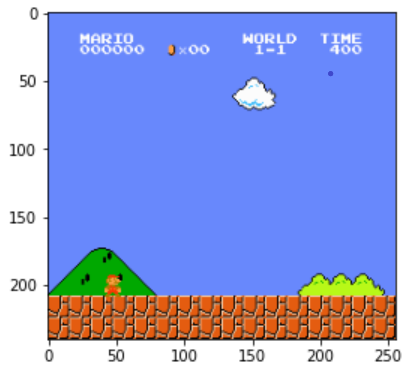

About Me
I graduated with a Bsc. degree in Mathematics and Information Engineering at The Chinese University of Hong Kong.
I love programming and learning Mathematics and Information Science. Mathematics gives me ideas
on how to solve problems in daily life. And programming turns maths idea into reality.
I developed certain new algorithms in my university life. Including the modular
inverses in my Github Page and algorithm to solve logical sentences in logic.
I also like singing and creating new ideas.
Recently, I have been doing a lot of self-innovative project. Including algorithmic trading,
using reinforcement learning model to train AI to play mario games in python, building randsomware for the randsom attacks,
Brute force attack to crack password in python and image classification using reinforcement learning in python.
Education
The Chinese University of Hong Kong
Bsc in Mathematics and Information Engineering
- Sep 2017- Jan 2022
Major in both Mathematics and Information Engineering
ensure strong analytic, programming skills and able to solve problem mathematically
Yan Oi Tong Tin Ka Ping Secondary School
- Sep 2011- Jul 2017
I like my Secondary School a lot
Kx developer
First Derivative plc.
July 2022 - Now
q/kdb+ to perform capital marketing related programming services
Part-time Sales Assistant
Japan Home Centre, Hong Kong
June 2018 - Aug 2019
To communicate with customers and develop excellent relations with them
STEM Tutor
i-education
May 2017 - Aug 2017
An Internship opportunity to teach primary school students to build STEM related project
able to communicate and explain to primary school students about the ideas/knowledge in the project
Fields of Interests
Information Science:
Information theory
Reinforcement Learning Model
Symbolic Programming
Maths:
Topics in Algebraic geometry
Topics in Symplectic geometry
Complex geometry
Floer theory
Quantum field theories
Programming Project
Python REPL
'''run
shift + enter to run the prorgam
'''
from datetime import *
now = datetime.now()
now.strftime("current date-time is %m/%d/%Y, %H:%M:%S")
mainly using python, pytorch, nes_py, stable-baselines3, OpenAI - gym.wrappers, gym_super_mario_bros to build the reinforcement learning model.
use matplotlib to visualize the model at each frame.

embedded in Software using botnet or Androrat to provide reverse shell attack on targets computer.
mainly using Cryptography, Crypto, requests, urllib.request, threading in python
Compute the sub-optimality and prove the achievability of k-letter superposition coding region for k = 3, 4, 5 using Shannon-type inequalities
mainly use psitip from Prof Li Cheuk Ting, pyomo, scipy, numpy, pytorch, fractions, matplotlib for the computation
base on research paper by YAZDANPANAH, Mehdi.
python program for getting the equation from fixed marked points and compute the tangents to an algebraic varieties
mainly using sympy, matplotlib, numpy
compute the diffupicsion symmetry group for a n-sized random walk on a randomly generated graph.
python - numpy, networkx, matplotlib, numba(for optimization) are required
Activity/Participation
recreational secretary
residential association at United College
aim to help organize sports events with other residential Hall.
Communicate with residents in Bethlehem Hall and discover extremely talented athletes to participate in the Head's cup at United College
Android app development contest
Develop a physics calculator with different equation in physics using mit app inventor 2
Hang Lung Mathematics Award
Discover a theory that is related to Morse theory in Mathematics
Picture of a complex 3 dimensional Calibi-Yau manifold

Project in Progress